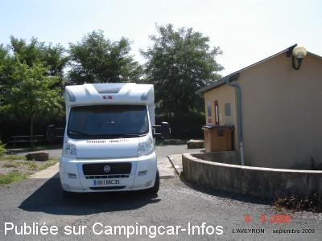
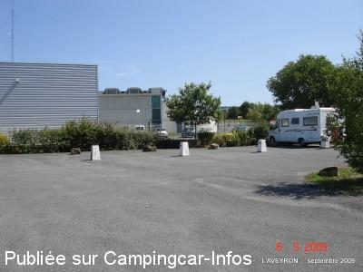
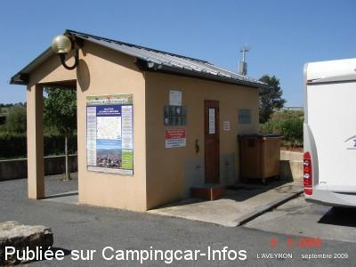

ASN = Aire de services avec stationnement nuit possible de :
LAISSAC
(N° 319)
Accès/adresse :
Chemin d'Ampiac
Place du Foirail des Ovins
12310 LAISSAC
Place du Foirail des Ovins
12310 LAISSAC
Latitude : (Nord) 44.38589° Décimaux ou 44° 23′ 9′′
Longitude : (Est) 2.82134° Décimaux ou 2° 49′ 16′′
Tarif : Gratuit
Services :


Tous commerces
Autres informations :
Ouvert de mars à novembre
6 emplacements
Tél Office du Tourisme : +33 (0)565 707 130

Le 27/02/2010 par lebretonbe

Le 27/02/2010 par lebretonbe

Le 27/02/2010 par lebretonbe
de
GT
le 08/05/2015 :
je viens de repasser sur cette aire, occupée , mais pas de problemes pout faire les services, je suis retourner au resto la bascule , la tete de veau est toujours aussi bonne
je viens de repasser sur cette aire, occupée , mais pas de problemes pout faire les services, je suis retourner au resto la bascule , la tete de veau est toujours aussi bonne
de
G.T
le 20/07/2013 :
Bonjour
effectivement l aire est bruyante car elle est a coté de la route a 4 voies, plus calme sur le grand parking qui nous est toléré, a condition de ne pas avoir des courses de voitures radiocommandees le soir , mais il faut bien que jeunesse se passe
le mardi allez donc manger la tête de veau au resto la bascule qui est en face
Bonjour
effectivement l aire est bruyante car elle est a coté de la route a 4 voies, plus calme sur le grand parking qui nous est toléré, a condition de ne pas avoir des courses de voitures radiocommandees le soir , mais il faut bien que jeunesse se passe
le mardi allez donc manger la tête de veau au resto la bascule qui est en face
de
KIKI 74
le 31/07/2012 :
cet aire est bien pour passer une nuit pas plus comme nous l'avons fait ... borne service gratuite .
cet aire est bien pour passer une nuit pas plus comme nous l'avons fait ... borne service gratuite .
de
GT
le 25/06/2012 :
j y suis passé ily a 2 ans et ça ne m avais pas plus , je viens d y retourné et j y suis reter 4 jours, pour ne pas loupé ce fameux marché aux bestiaux
en plus l OT propose un petit circuit a faire dans le village , je me suis régaler
PS avec une place aussi grande il faudrais essayer de ne pas ce coller les uns aux autres merci
j y suis passé ily a 2 ans et ça ne m avais pas plus , je viens d y retourné et j y suis reter 4 jours, pour ne pas loupé ce fameux marché aux bestiaux
en plus l OT propose un petit circuit a faire dans le village , je me suis régaler
PS avec une place aussi grande il faudrais essayer de ne pas ce coller les uns aux autres merci
de
balain
le 11/04/2012 :
de passage le 8 avril 2012,ville agréable, mais dérangé la nuit,rodéo de voiture, klaxon, sur la place du foirail, sans conséquence,
de passage le 8 avril 2012,ville agréable, mais dérangé la nuit,rodéo de voiture, klaxon, sur la place du foirail, sans conséquence,
de
xxx
le 21/10/2011 :
Passage le 03/10/2011. Aire bien située au bout de la route. 6 Ccars pas plus, sauf que la mairie autorise le stationnement pour la nuit à 100m en avant de l'aire, sur le parking du foirail ; on ne peut que la remercier. Le mardi matin c'est spectaculaire de voir ce marché aux bestiaux qui partent pour l'Italie et qui nous reviennent en barquettes (j'ai pas tout compris car je suis d'un esprit "simple", mais bon, je pense qu'on est capable en France de faire la même filière bovine sans avoir besoin de nos voisins transalpins).
Passage le 03/10/2011. Aire bien située au bout de la route. 6 Ccars pas plus, sauf que la mairie autorise le stationnement pour la nuit à 100m en avant de l'aire, sur le parking du foirail ; on ne peut que la remercier. Le mardi matin c'est spectaculaire de voir ce marché aux bestiaux qui partent pour l'Italie et qui nous reviennent en barquettes (j'ai pas tout compris car je suis d'un esprit "simple", mais bon, je pense qu'on est capable en France de faire la même filière bovine sans avoir besoin de nos voisins transalpins).
de
magilius
le 08/08/2010 :
Nous avons fait les services. Borne très pratique mais aire avec trop peu de places (complète le temps de faire le plein), près de la nationale et pas facile à localiser. On peut stationner, par contre, sur le parking en face du café (très sympathique). Une affiche le précise au dessus de la borne. Station service Intermarché à proximité.
Nous avons fait les services. Borne très pratique mais aire avec trop peu de places (complète le temps de faire le plein), près de la nationale et pas facile à localiser. On peut stationner, par contre, sur le parking en face du café (très sympathique). Une affiche le précise au dessus de la borne. Station service Intermarché à proximité.
de
ocral jacques
le 17/07/2010 :
J'y ai fait mes vidanges et le plein d'eau. Rien à rajouter sauf que les parkings sont en pente.
J'y ai fait mes vidanges et le plein d'eau. Rien à rajouter sauf que les parkings sont en pente.
de
david
le 18/06/2009 :
Cette aire est en parfait état et très agréable, seul problème victime de sa bonne réputation plus de 20 CC sur le parking attenant. Merci à la mairie d'entretenir aussi bien cette aire.
Cette aire est en parfait état et très agréable, seul problème victime de sa bonne réputation plus de 20 CC sur le parking attenant. Merci à la mairie d'entretenir aussi bien cette aire.
de
Charvin Dominique sur fourgon Font Vendôme
le 17/08/2007 :
Beaucoup de CC, nous avons dormis sur le parking attenant au foirail, l'aire est maintenant un peu juste en places. Nuit très calme. Nous avons malheureusement loupé le marché aux bestiaux du mardi matin qui avait été supprimé pour cause de fièvre aphteuse en Grande Bretagne. Nous l'avions vu quelques années auparavant.
Remarque, ne pas se positionner comme moi en face du panneau du centre de secours, il est très lumineux la nuit !
Beaucoup de CC, nous avons dormis sur le parking attenant au foirail, l'aire est maintenant un peu juste en places. Nuit très calme. Nous avons malheureusement loupé le marché aux bestiaux du mardi matin qui avait été supprimé pour cause de fièvre aphteuse en Grande Bretagne. Nous l'avions vu quelques années auparavant.
Remarque, ne pas se positionner comme moi en face du panneau du centre de secours, il est très lumineux la nuit !
de
Virginie D
le 14/04/2007 :
Aire très agréable, calme, facile d'accès, avec de la lumière le soir pour se rendre aux sanitaires. Une bonne étape.
Aire très agréable, calme, facile d'accès, avec de la lumière le soir pour se rendre aux sanitaires. Une bonne étape.